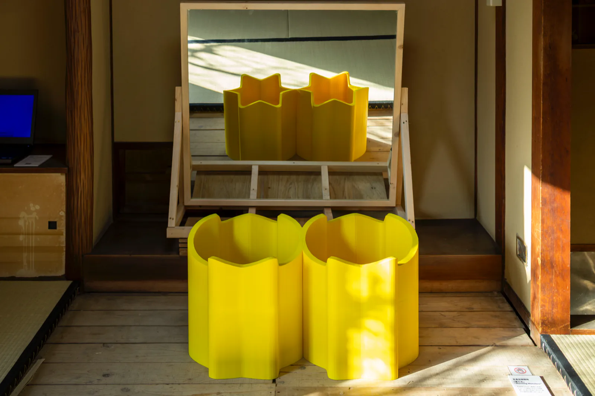

渡辺英治
Scientist
経歴Profile
Eiji Watanabe
1962年、大阪市の下町に生まれる。1986年に大阪大学理学部生物学科を卒業し、1991年に同大学基礎工学部生物工学科で工学博士を取得。愛知県発達障害研究所の研究員を経て、1995年から岡崎の基礎生物学研究所に移り、1998年から神経生理学研究室の准教授を務める。
脳のナトリウムレベルセンサー Nax チャネル、メダカの視覚と行動、錯視と深層学習を研究。
錯視作品「Morning Monster」（2020年、Lana Sinapayen と）や、本展の会期中に発明した「エデンの海、錯視から解放された魚」などの錯視も発表している。

研究の柱Threads
- 脳のナトリウムセンサー
- Nax チャネルによる体液ナトリウム濃度の感知と塩分摂取の制御（2002 Nat Neurosci、2007 Neuron）
- メダカの視覚と行動
- バイオロジカルモーションへの接近、ピンクノイズの動きが誘う捕食（2012 Sci Rep、2014 Anim Cogn）
- 錯視と AI
- 予測学習する深層ニューラルネットが「蛇の回転錯視」を人と同じように知覚（2018 Front Psychol、2022 Sci Rep）
- 錯視作品
- 渡辺錯視、岡崎げんき館錯視、Morning Monster（2020）、エデンの海、錯視から解放された魚（2025）
研究とアート活動は、YouTube チャンネル「博士と道化師」で紹介された。
略歴Biography
- 1962
- 大阪市の下町に生まれる
- 1986
- 大阪大学理学部生物学科卒業
- 1991
- 大阪大学基礎工学部生物工学科にて学位取得。工学博士
- 1992–95
- 愛知県発達障害研究所、研究員
- 1995–98
- 基礎生物学研究所・感覚情報処理部門、助手
- 1998–
- 基礎生物学研究所・神経生理学研究室、准教授
- 1998–
- 総合研究大学院大学・生命科学研究科、准教授（兼任）
- 2002–06
- 科学技術振興事業団・さきがけ研究、研究員（兼任）
- 2022–
- 基礎生物学研究所・超階層生物学センター・AI解析室、室長（兼任）
略歴（英語）Biography
- 1962
- Born in Osaka, Japan
- 1986
- Faculty of Science, Department of Biology, School of Science, Osaka University
- 1991
- Ph.D. in Engineering, Department of Biotechnology, School of Engineering Science, Osaka University
- 1992–95
- Researcher, Aichi Institute for Developmental Research
- 1995–98
- National Institute for Basic Biology, Assistant Professor
- 1998–
- National Institute for Basic Biology, Associate Professor
- 1998–
- School of Life Science, The Graduate University for Advanced Studies (Concurrent)
- 2002–06
- PRESTO Researcher, Japan Science and Technology Corporation (Concurrent)
- 2022–
- Office Chief of AI facility, National Institute for Basic Biology (Concurrent)
著書Books
- 2018
- 『ロマンで古代史は読み解けない：科学者が結ぶ、地図と陰陽』（共著）彩流社
- 2025
- 『神経科学者と学ぶ深層学習超入門：AIの種を知り、知識の樹を育て、研究で最新モデルを使いこなす』羊土社
主要論文Selected Papers
- 1995
- Watanabe E, Maeda N, Matsui F, Kushima Y, Noda M, Oohira A. Neuroglycan C, a novel membrane-spanning chondroitin sulfate proteoglycan that is restricted to the brain. Journal of Biological Chemistry 270, 26876–26882
- 2000
- Watanabe E, Fujikawa A, Matsunaga H, Yasoshima Y, Sako N, Yamamoto T, Saegusa C, Noda M. Nav2/NaG channel is involved in control of salt-intake behavior in the CNS. Journal of Neuroscience 20, 7743–7751
- 2002
- Hiyama TY, Watanabe E, Ono K, Inenaga K, Tamkun MM, Yoshida S, Noda M. Nax channel involved in CNS sodium-level sensing. Nature Neuroscience 5, 511–512
- 2007
- Shimizu H, Watanabe E, Hiyama TY, Nagakura A, Fujikawa A, Okado H, Yanagawa Y, Obata K, Noda M. Glial Nax channels control lactate signaling to neurons for brain [Na+] sensing. Neuron 54, 59–72
- 2010
- Watanabe E, Matsunaga W, Kitaoka A. Motion signals deflect relative positions of moving objects. Vision Research 50, 2381–2390
- 2012
- Matsunaga W, Watanabe E. Visual motion with pink noise induces predation behaviour. Scientific Reports 2, 219
- 2014
- Nakayasu T, Watanabe E. Biological motion stimuli are attractive to medaka fish. Animal Cognition 17, 559–575
- 2017
- Shimmura T, Nakayama T, Shinomiya A, Fukamachi S, Yasugi M, Watanabe E, et al. Dynamic plasticity in phototransduction regulates seasonal changes in color perception. Nature Communications 8, 412
- 2018
- Watanabe E, Kitaoka A, Sakamoto K, Yasugi M, Tanaka K. Illusory motion reproduced by deep neural networks trained for prediction. Frontiers in Psychology 9, 345
- 2022
- Kobayashi T, Kitaoka A, Kosaka M, Tanaka K, Watanabe E. Motion illusion-like patterns extracted from photo and art images using predictive deep neural networks. Scientific Reports 12, 3893
全 33 本の論文リストはカタログ p.20–22 に収録。
基礎生物学研究所 神経生理学研究室、Google Scholar へのリンクは URL 確認後に追加する。